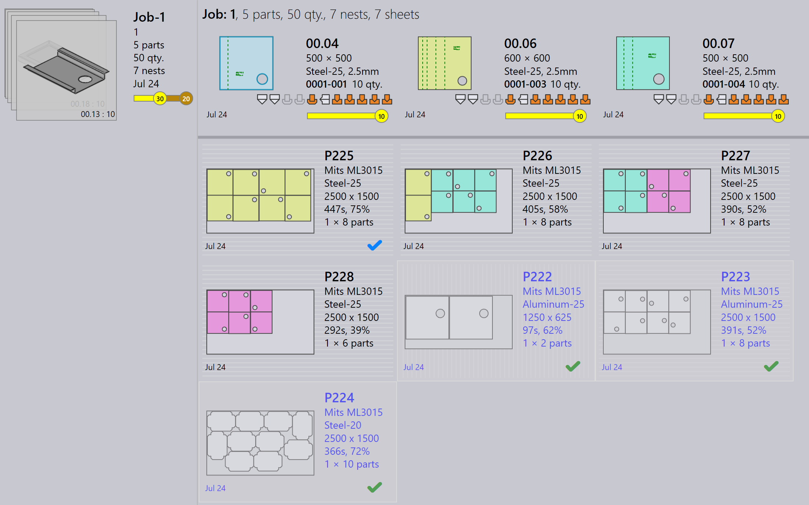

Pannello layout
Questa sezione spiega le azioni relative al layout come Invia alla macchina…, Richiama dalla macchina…, Esporta output, Contrassegna come completo…, Aggiungi pezzi…, Adatta/Compatta…, Dividi layout… e altre opzioni utilizzate per gestire le istanze di layout.

|
|


Invia alla macchina…
-
Quando un nesting è pronto (riempito o urgentemente necessario), è possibile inviarlo alla macchina.
-
Fare clic con il pulsante destro del mouse sul nesting e selezionare Invia alla macchina….
-
Viene creata automaticamente una cartella, denominata con il nome del nesting.
-
I file di output (fxlyt, NC, report, csv) vengono esportati nella posizione di output del lavoro.
-
I nesting inviati alla macchina sono mostrati con un segno di spunta blu.

| Una volta rilasciati, quei nesting non vengono più ritentati per il riconfezionamento. |
Richiama dalla macchina…
-
Se l’output necessita di convalida o di un aggiornamento (ad esempio, aggiungendo più pezzi):
-
Fare clic con il pulsante destro del mouse sul layout esportato.
-
Selezionare Richiama dalla macchina….
-
-
I file di output e la cartella (fxlyt, NC, report, csv) vengono eliminati.
-
Il nesting diventa nuovamente modificabile.
-
È possibile apportare modifiche e inviarlo nuovamente alla macchina.

Esporta output
-
Fare clic con il pulsante destro del mouse su qualsiasi layout (nesting) che è stato inviato alla macchina e fare clic su Esporta output.

-
L’opzione Esporta output esporta i file NC, Report e Layout nelle rispettive cartelle di output della macchina.
-
Questa opzione rigenera il file NC con le impostazioni dell’unità correnti per il layout.
| Esporta output non è disponibile per i layout completati e i layout in attesa in coda per il riconfezionamento. |
Segna come completato
-
Una volta che il nesting è stato elaborato sulla macchina, fare clic con il pulsante destro del mouse sul nesting e selezionare Contrassegna come completo….
-
È possibile selezionare più nesting e segnarli come completati contemporaneamente.
-
Quando un nesting viene contrassegnato come completato:
-
Viene visualizzato in grigio, spostato alla fine dell’elenco e mostrato con un segno di spunta verde.
-
Il layout viene rimosso dall’elenco dei layout attivi.
-
Gli stati dei pezzi e dei lavori vengono aggiornati e le quantità elaborate passano allo stato completato.
-
I file di output per quel layout vengono rimossi dalla posizione di output della macchina per evitare duplicati.

-
Aggiungi pezzi…

-
Utilizzare questa opzione per aggiungere più pezzi a un layout relativamente poco compatto. Come il nesting interattivo, questa è un’opzione guidata da procedura guidata e può essere utilizzata su un singolo o più layout contemporaneamente.
-
TruSmartCAM monta la procedura guidata di riconfezionamento del layout nell’area di lavoro principale quando questa opzione viene utilizzata. Tenere premuto il tasto Ctrl e selezionare uno o più pezzi da compattare sul layout e premere Succ.

-
I pezzi selezionati vengono visualizzati nel passaggio successivo con una colonna di quantità modificabile. Aggiornare le quantità dei pezzi se necessario nel campo Update Qty. Fare clic su Succ per procedere al nesting. Si noti che le quantità possono essere solo aumentate, non diminuite.

-
Tutti i layout vengono nidificati separatamente e i risultati nidificati vengono visualizzati con i pezzi appena compattati posizionati su di essi. Selezionando il layout vengono visualizzati tutti i pezzi del layout esistenti. Il risultato viene automaticamente scartato se non viene posizionato alcun nuovo pezzo durante il riconfezionamento. Un layout con più copie può risultare in modelli diversi dopo il riconfezionamento.

Adatta/Compatta…
-
Questo comando basato su procedura guidata può essere utilizzato per adattare un layout da una macchina a un’altra quando la macchina originale è fuori servizio o quando il carico di lavoro della macchina deve essere bilanciato.

-
Può essere utilizzato quando il foglio pianificato non è disponibile e il layout deve essere ripianificato su un altro foglio disponibile.
-
È possibile unire layout compattati su fogli più piccoli su fogli più grandi per utilizzare il materiale in modo più efficiente.
-
È possibile dividere layout compattati su fogli più grandi in fogli più piccoli se gli stock di fogli grandi non sono disponibili.
-
È possibile migliorare l’efficienza di compattazione di più layout (anche da macchine diverse) unendoli insieme.
-
Per utilizzarlo, selezionare uno o più layout e fare clic su Adatta/Compatta… per aprire la procedura guidata nell’area di lavoro.

-
Il riquadro sinistro mostra tutti i layout selezionati e il riquadro Pezzi mostra i pezzi del layout.

-
Selezionare la macchina di destinazione e il materiale del foglio, quindi fare clic su Succ per eseguire il rinesting.
-
I nuovi risultati del nesting vengono mostrati nel riquadro dei risultati.

-
Fare clic su Succ per salvare il layout adattato o compattato.

Suddivisione di un layout
L’opzione Dividi layout… consente di dividere un layout esistente in più layout modificando le quantità, senza la necessità di rifare l’attrezzaggio o il nesting.
Questa funzione è particolarmente utile nei seguenti scenari:
-
Quando è necessario produrre una parte della quantità totale immediatamente mentre si programma la quantità rimanente per una produzione successiva.
-
Quando i requisiti di produzione devono essere distribuiti su più turni o giorni per ottimizzare il flusso di lavoro e l’utilizzo delle risorse.
-
Quando una macchina specifica è temporaneamente non disponibile o occupata e è necessario regolare il layout per adattarsi ai vincoli di produzione attuali.
Per dividere un layout, eseguire i seguenti passaggi:
-
Nella vista Layout, selezionare il layout richiesto.

-
Fare clic su Dividi layout….

-
Immettere il valore richiesto in Copie nuove.

-
Fare clic su OK.

Il layout selezionato è ora diviso in due layout con quantità regolate.